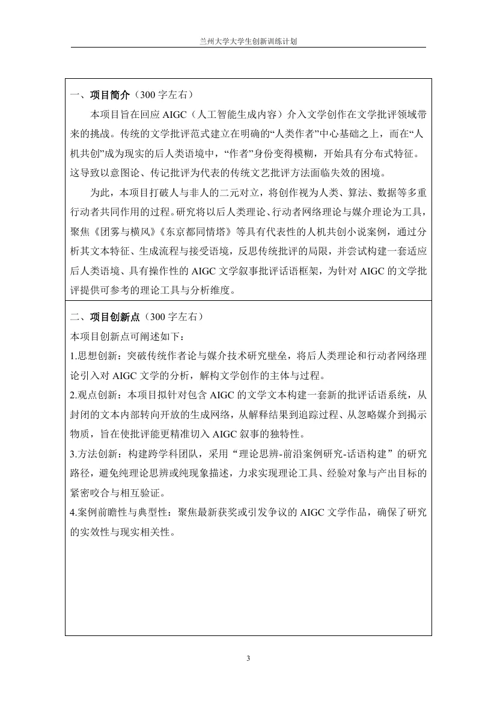
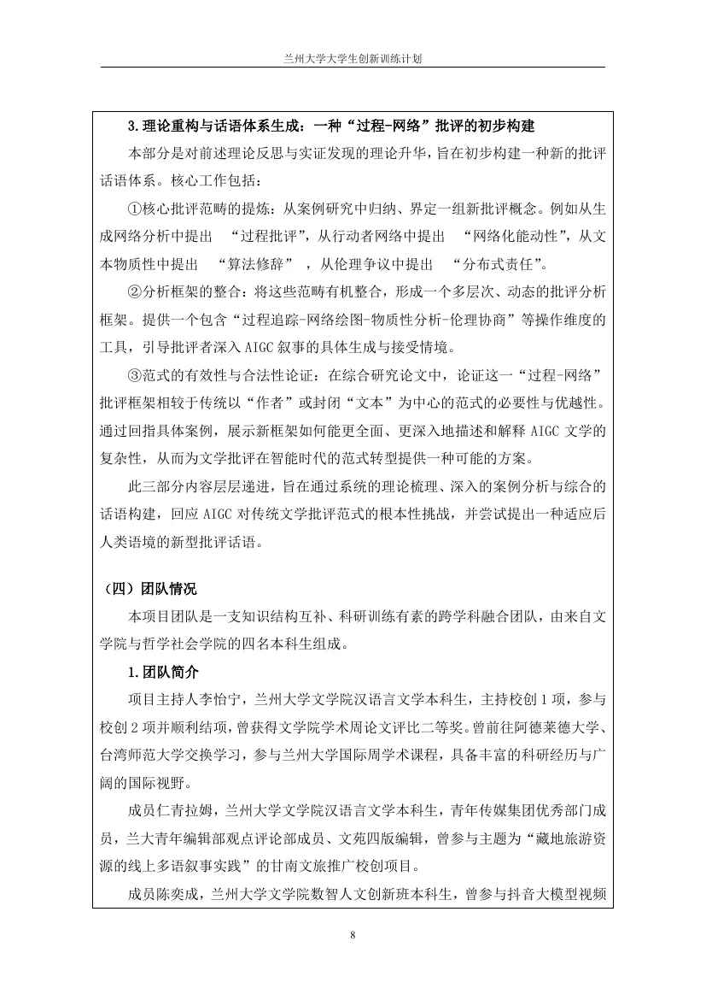
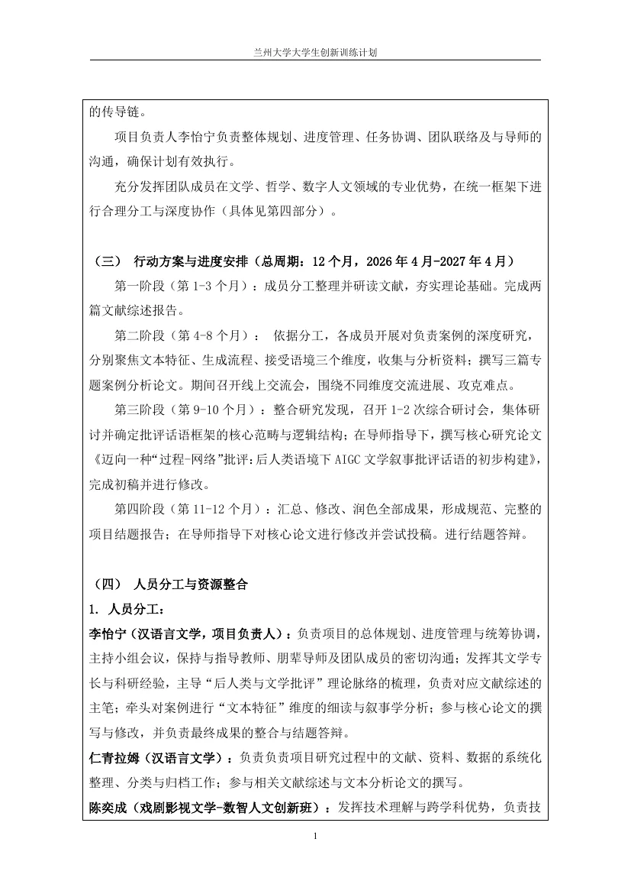
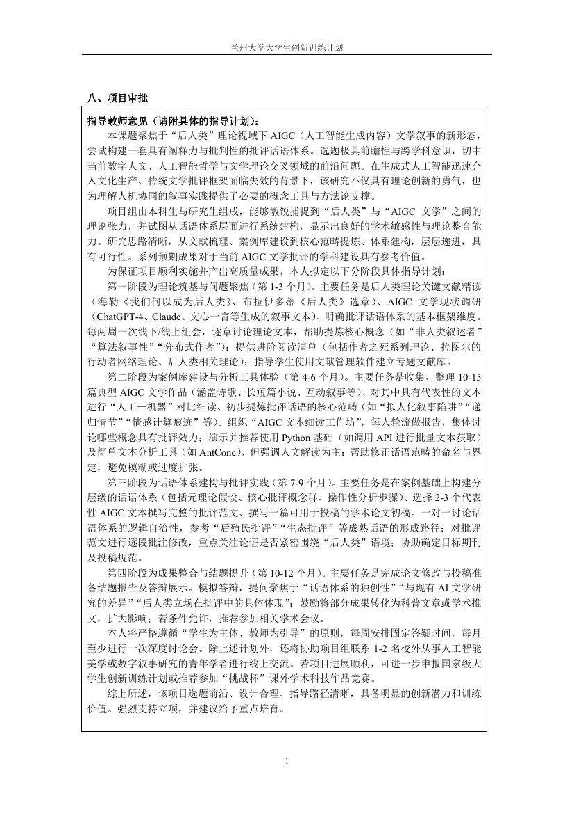

作者不再是单一主体
把人类与非人行动者放在同一讨论框架，重新理解作者、意图和创作主体。
03 / AI × humanities research
在 AIGC 介入文学之后，作者不再只是一个人。这个研究把 Prompt、模型、数据、平台和人工修订放进同一条生成网络，尝试建立一套能批评“过程”的话语框架。
项目负责人：李怡宁。我的团队角色：负责技术网络论文，主导 ANT 方法追踪生成流程，并提供技术与数字人文方法论支持。
Read the caseResearch question
传统文学批评习惯围绕“人类作者”建立意图、传记和文本的解释链。但当一部作品由人类、算法、数据与平台共同参与时，作者身份变得分布式，批评也需要从静态结果转向生成过程。
Research lens
项目申请书把问题拆成三层：后人类理论提供主体视角，行动者网络理论追踪异质行动者，媒介理论说明技术不是透明管道。
把人类与非人行动者放在同一讨论框架，重新理解作者、意图和创作主体。
沿着 Prompt、模型响应、人工修订、数据与平台记录生成如何发生，而不是只评价结果。
关注模型接口、数据和平台如何改变叙事过程，避免把 AI 当作没有摩擦的黑箱。
My contribution
这里不是把技术当成“工具介绍”，而是把它嵌入文学批评的证据链里，回答人、算法、数据和平台如何共同构成文本。
围绕 AIGC 文本的生产网络撰写技术视角论文，把模型、数据、平台与人工修订纳入论证。
对案例的生成流程进行追踪与分析：从初始指令到模型响应、人工修改和最终成稿。
为核心论文提供技术视角与数字人文方法支持，帮助文学、哲学与技术成员共享概念语言。
Research workflow
下面是申报书设定的研究路径，不把计划误写成已完成成果。
精读后人类理论，调研 AIGC 文学现状，明确批评话语的基本维度。
整理 10—15 篇典型 AIGC 文学作品，开展人机对比细读与生成流程记录。
提炼过程性、网络化、物质性和分布式伦理等核心批评范畴。
完成论文修改、结题报告和答辩准备，形成可继续投稿的研究成果。
目标不是只解释一部作品，而是形成一套可操作的 AIGC 文学批评工具。
Application evidence
图像保留原始申请书的结构性证据；点击图片可以放大查看。





Planned outputs
申请书计划完成 2 篇文献综述、3 篇案例论文，以及一篇不少于 8000 字的核心研究论文。它们是项目目标，不是我现在已经完成的成果。
我能在文学问题中识别技术环节，把技术经验转成可追踪、可论证的研究材料；同时理解研究的阶段性，不用尚未完成的产出替自己加戏。
Continue
这个项目与火石杯 AIGC 案例共享同一个兴趣：当工具变得越来越强，人的判断要如何被看见、被记录、被讨论。